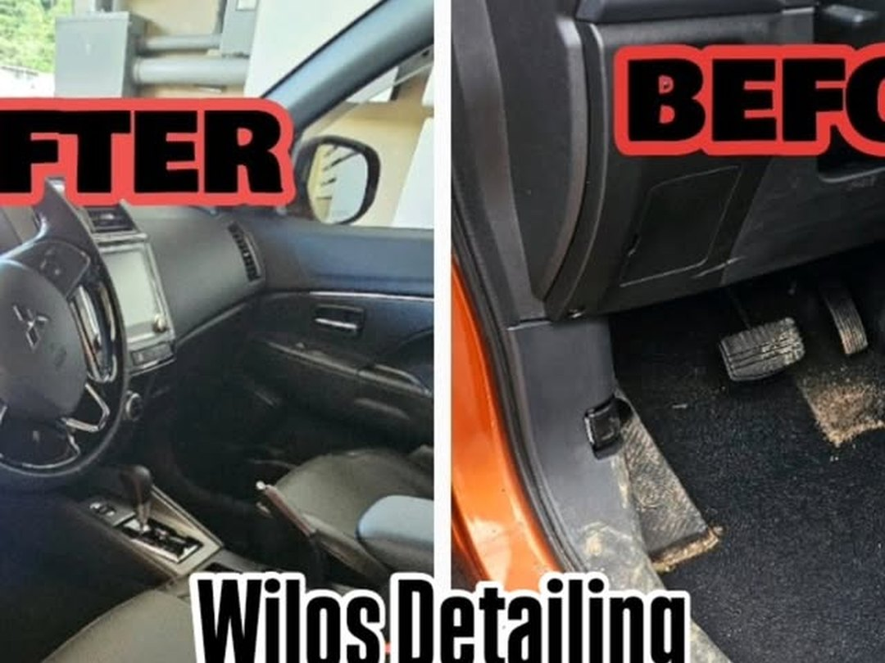

Ceramic Coating
Recubrimiento cerámico que sella la pintura: hidrofobicidad extrema, brillo profundo y defensa contra sol, lluvia y químicos. Trabajamos Gyeon y grafeno.
Cotizar →Ceramic Coatings · Utuado, Puerto Rico
Detailing premium y recubrimientos cerámicos que restauran el brillo de tu vehículo y blindan su valor contra el sol, la lluvia y el tiempo.
Trabajo real
Fotos de nuestros trabajos publicados en Instagram. Toca las flechas o desliza para ver más.
Capas de protección
De la descontaminación al sellado final: construimos la protección de tu vehículo capa sobre capa, con productos reales y trabajo de detalle.
Recubrimiento cerámico que sella la pintura: hidrofobicidad extrema, brillo profundo y defensa contra sol, lluvia y químicos. Trabajamos Gyeon y grafeno.
Cotizar →Eliminamos swirls, rayazos finos y marcas de lavado para devolverle profundidad, claridad y un acabado espejo a tu pintura.
Cotizar →Pulido en uno o dos pasos según el estado de tu pintura, para un acabado uniforme, brillante y listo para sellar.
Cotizar →Descontaminación química con iron remover que libera la pintura de partículas de hierro y contaminantes antes de pulir.
Cotizar →Limpieza profunda de la cabina con vapor: asientos, alfombras y cada rincón quedan como nuevos, sin químicos agresivos.
Cotizar →Devolvemos la claridad a focos opacos y amarillentos: mejor visibilidad de noche y mejor presencia de día.
Cotizar →
Quiénes somos
Somos Wilos Detailing and Ceramic Coatings, detailing premium en Utuado, Puerto Rico. Cada carro que entra a nuestro taller sale con acabado espejo y protección real: descontaminación, pulido de precisión y sellado cerámico hecho con calma y detalle.
Preguntas frecuentes
Es un recubrimiento líquido que se adhiere a la pintura del vehículo y forma una capa protectora transparente. Repela agua y suciedad, resiste rayos UV y químicos, y deja un brillo profundo que dura mucho más que una cera tradicional.
Depende del producto y del mantenimiento. En Wilos trabajamos opciones como cerámica Gyeon de 1 año y recubrimientos de grafeno; te orientamos según el uso que le des a tu vehículo.
Lo ideal es reservar para asegurar tu espacio. Escríbenos por WhatsApp al 787-527-8202 y te confirmamos disponibilidad.
Sí. Abrimos los 7 días de la semana, de 8:00am a 8:00pm.
Estamos en la Urb. Jesús María Lago J10, en Utuado, Puerto Rico.
Por WhatsApp al 787-527-8202 o llamando al +1 787-527-8202. Cuéntanos qué necesita tu vehículo y te damos la cotización.
Contacto
Cuéntanos qué necesita tu vehículo y te respondemos con la cotización. Abiertos 7 días, 8am-8pm.
Esta página es una muestra de lo que Manupro puede hacer por tu negocio: una web profesional, rápida y lista para vender por WhatsApp.
Un año de tranquilidad.
Quiero Tranquilidad Total